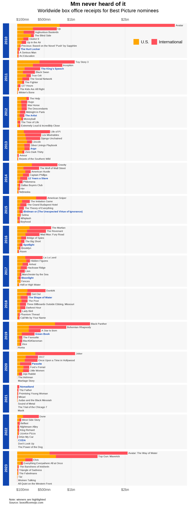

On the surprising popularity of the 2023 nominations for Best Picture
With the release of this year’s Academy Award nominations, many have pointed out a surprising fact: several of the films gunning for Best Picture are actually hits! More than that, the highest-grossing movie of the year (which is, somehow, Avatar: The Way of Water) and the second-highest grossing (Top Gun: Maverick) were both nominated.
There have long been discussions over whether prestige awards like the Oscars still matter. It doesn’t help that popular blockbusters tend not to get nominated—few people care that an indie film they didn’t see won over other indie films they didn’t see. The Academy of Motion Picture Arts and Sciences has made some efforts to stay relevant, such as expanding the field of Best Picture nominees from the traditional 5 to a maximum of 10 starting 2010. The idea is (and it sounds weird to say it) to be more inclusive of mainstream films.
It hasn’t worked so well. I compiled global box office receipts on all Best Picture nominees from 2010 to 2023 and charted them below. Billion-dollar blockbusters are still seldom nominated. They also never win.
library(tidyverse)
library(showtext)
library(ggplot2)
font_add_google("Karla", "karla")
df <- read_csv("oscars-data.csv")
df %>%
select(year, title, winner, gross_us, gross_int) %>%
filter(year >= 2009) %>%
replace_na(list(gross_us = 0, gross_int = 0)) %>%
pivot_longer(cols = c(gross_us, gross_int),
names_to = "market",
values_to = "gross") %>%
group_by(title) %>%
mutate(label_pos = cumsum(gross),
label = ifelse(market == "gross_int", title, ""),
year = year + 1,
winner = ifelse(winner == "yes", "bold", "plain")) %>%
ungroup() %>%
group_by(year) %>%
mutate(title = fct_reorder(title, gross)) %>%
ungroup() %>%
# Plot
ggplot(aes(y = title, x = gross, fill = market)) +
geom_bar(stat = "identity") +
facet_grid(rows = vars(year), scales = "free_y", space = "free_y", switch = "y") +
# Labels
labs(title = "Mm never heard of it",
subtitle = "Worldwide box office receipts for Best Picture nominees",
caption = "Note: winners are highlighted\nSource: boxofficemojo.com") +
geom_text(aes(x = label_pos, label = label, fontface = winner, color = winner),
size = 7/.pt, family = "karla", hjust = 0, nudge_x = 15*10^6) +
scale_x_continuous(name = "Worldwide box office receipts",
limits = c(0, 3*10^9),
breaks = c(100, 500, 1000, 2000) * 10^6,
labels = c("$100mn", "$500mn", "$1bn", "$2bn"),
sec.axis = sec_axis(~.,
breaks = c(100, 500, 1000, 2000) * 10^6,
labels = c("$100mn", "$500mn", "$1bn", "$2bn"))) +
# Themes
scale_color_manual(values = c("#1046b1", "gray10")) +
scale_fill_manual(values = c("#ff505b", "#ffa600"),
labels = c("International", "U.S.")) +
guides(fill = guide_legend(reverse = TRUE),
color = FALSE) +
theme_minimal(base_family = "karla") +
theme(plot.title = element_text(size = 16, face = "bold", hjust = .5),
plot.subtitle = element_text(size = 14, hjust = .5, margin = margin(b = 12)),
plot.caption = element_text(size = 8, hjust = 0, margin = margin(t = 20)),
axis.ticks = element_blank(),
axis.title = element_blank(),
axis.text.x.top = element_text(size = 10, margin = margin(b = 5)),
axis.text.x.bottom = element_text(size = 10, margin = margin(t = 5)),
axis.text.y = element_blank(),
legend.position = c(.83, .96),
legend.direction = "horizontal",
legend.title = element_blank(),
legend.text = element_text(size = 12),
strip.background = element_rect(fill = "#1046b1", color = NA),
strip.text = element_text(size = 10, face = "bold", color = "white"),
panel.background = element_rect(fill = "gray97", color = NA),
panel.grid.major.x = element_line(linewidth = .15, color = "gray80"),
panel.grid.major.y = element_blank(),
panel.grid.minor.x = element_blank(),
panel.grid.minor.y = element_blank())
Some caveats. Certain films, like last year’s Best Picture winner CODA, were released primarily on streaming, so their box office takings would not necessarily reflect their popularity. And of course, the pandemic has artificially depressed receipts from the last two years. Nevertheless, it’s clear that for better or worse, the 7,000 or so voting members of the Academy have generally refused to cater to mainstream appeal.
Hence the surprise at 2023’s nominees. There are fans of Avatar, there are fans of Top Gun, and there are fans of indie favorite Everything Everywhere All at Once. Taken together, there may just be enough people out there who will care what an exclusive club of film industry professionals have to say about cinema this year.
Another way to contrast the Academy’s tastes with other film enthusiasts is to look at the ratings of professional movie critics and online audience reviews. I collected these from Metacritic for all Best Picture nominees from 2001 to 2023 and charted them in the scatter below. The dotted line is a 45-degree line, indicating a state of agreement between critics and ordinary moviegoers
library(highcharter)
library(broom)
fit <- lm(mc_users ~ mc_critics, data = df) %>%
augment() %>%
arrange(mc_critics) %>%
slice(c(1, nrow(df)))
x <- c("Title", "Year released", "Metascore", "User score", "Box office")
y <- c("{point.title:s}", "{point.year:.0f}", "{point.mc_critics:.0f}", "{point.mc_users:.1f}", "${point.gross:,.0f}")
tltip <- tooltip_table(x, y)
theme <- hc_theme(
chart = list(backgroundColor = NULL,
style = list(fontFamily = "Karla",
fontSize = "16px")),
title = list(style = list(color = "#333333",
fontWeight = "bold",
fontSize = "21px")),
subtitle = list(style = list(color = "#333333",
fontSize = "18px")),
caption = list(style = list(color = "gray75",
fontSize = "11px"))
)
hchart(df, "scatter",
hcaes(x = mc_critics, y = mc_users, group = winner),
color = c("#1046b1", "#ffa600"),
stickyTracking = FALSE) %>%
hc_title(text = "That's just, like, your opinion, man") %>%
hc_subtitle(text = "Professional critics vs audience reviews for Best Picture nominees, 2001-2023") %>%
hc_caption(text = "Note: winners are highlighted<br>Source: metacritic.com, boxofficemojo.com",
align = "left",
useHTML = TRUE) %>%
hc_xAxis(title = list(text = "Metascore"),
min = 40, gridLineWidth = 1,
labels = list(style = list(fontSize = "14px"))) %>%
hc_yAxis(title = list(text = "User score"),
startOnTick = FALSE, endOnTick = FALSE, min = 5.5, max = 9.5,
labels = list(style = list(fontSize = "14px"))) %>%
hc_tooltip(useHTML = TRUE,
pointFormat = tltip,
headerFormat = "") %>%
hc_add_series(data = tibble(mc_critics = c(0, 100),
mc_users = c(0, 10)),
type = "line", dashStyle = "Dot",
hcaes(x = mc_critics, y = mc_users),
color = "black", lineWidth = 1,
marker = FALSE, enableMouseTracking = FALSE) %>%
hc_legend(enabled = FALSE) %>%
hc_add_theme(theme)The closest the Academy, movie critics, and audiences got to unanimity was with the Lord of the Rings films. More often however, the camps were split. The Academy and professional critics closed ranks on 2016’s Best Picture winner Moonlight; audiences were less impressed. On the flip side, both the Academy and moviegoers loved 2005’s Crash, but publications still routinely cite its Best Picture win as an atrocity to cinema. Occasionally, critics and audiences side against the Academy: Extremely Loud and Incredibly Close’s nomination baffled them both.
It’s unclear whether the Oscars and their ilk will ever reclaim the eminence they once held. Few legacy institutions are held in much reverence these days. Maybe the Oscars never deserved it to begin with. Still, it’s nice to have a cultural fixed point, to be able to look back and say, ah yes 2004, the year of Return of the King. Was 2022 the year of CODA? I’m afraid most would simply shrug.
Text and figures are licensed under Creative Commons Attribution CC BY-SA 4.0. The figures that have been reused from other sources don't fall under this license and can be recognized by a note in their caption: "Figure from ...".